ts(data = NA, start = 1, end = numeric(), frequency = 1)7 Series temporales
7.1 Introducción
El estudio de las series temporales es una rama fundamental en diversas disciplinas como la economía, la meteorología, la ingeniería, la medicina y muchas otras, ya que permite comprender la evolución y la variabilidad de una secuencia de observaciones registradas a lo largo del tiempo.
La identificación de tendencias, patrones cíclicos y comportamientos estacionales en series temporales proporciona valiosa información para construir modelos predictivos que ayuden en la toma de decisiones, la planificación estratégica y la anticipación de eventos futuros.
7.2 ¿Qué es una serie temporal?
Una serie temporal es una sucesión de observaciones de una variable realizadas a intervalos regulares de tiempo.
El estudio de series temporales tiene por objeto analizar la evolución de una variable a través del tiempo.
La diferencia esencial con los análisis temporales es que las observaciones sucesivas no son independientes entre sí, y el análisis debe llevarse a cabo teniendo en cuenta el orden temporal de las observaciones. Por lo tanto, es muy importante conocer la periodicidad de los datos de las series que se están analizando.
La periodicidad puede ser:
Anual: Se toma un dato cada año.
Mensual: Se toma un dato cada mes.
Semanal: Se toma un dato cada semana.
Diaria: Se toma un dato cada día.
Por supuesto, existen muchos más tipos de periodicidad, como semestral o trimestral. El tipo de periodicidad va a ser algo importante en el análisis de la serie.
Ejemplos de series temporales
Serie del IPC en España. Esta serie puede ser anual o mensual.
Serie de Temperaturas en Mallorca. Esta serie suele ser mensual. Si fuera anual perderíamos mucha información, pues un invierno extremadamente frío puede compensarse con un verano muy cálido, de modo que la temperatura media del año sea templada.
Serie de ventas de una empresa. Este tipo de series puede ser anual, mensual o semanal.
Demanda de energía eléctrica. Esta serie suele obtenerse con periodicidad horaria.
Series de cotizaciones de bolsa. Este tipo de series se obtienen con la periodicidad que se quiera.
7.3 ¿Cómo crear una serie de tiempo en R?
En R ts es la función genérica para que los datos tengan forma de serie temporal. Su sintaxis es la siguiente:
donde:
data: Vector, “data frame” o matriz de datos.
start: Referencia de la primera observacion, es un vector con dos valores numéricos, el primero relativo al año y el segundo relativo al trimestre y mes de inicio (1 para el primer trimestre y 1 para enero en series de datos mensuales).
end: Referencia de la ultima observación.
frequency: Número de observaciones por año (4 en series trimestrales, 12 en series mensuales).
Un ejemplo de elaboración de un objeto “ts” es el siguiente:
ts(1:10, frequency = 4, start = c(1959, 2)) Qtr1 Qtr2 Qtr3 Qtr4
1959 1 2 3
1960 4 5 6 7
1961 8 9 10 Para importar datos a R, usa la función ts de la siguiente manera. El inputData usado aquí es idealmente un vector numérico de clase “numeric” or “integer”.
ts(inputData, frequency = 4, start = c(1959, 2)) # datos trimestrales
ts(1:10, frequency = 12, start = 1990) # datos mensuales
ts(inputData, start=c(2009), end=c(2014), frequency=1) # datos anualesEjemplo
Consideremos el gasto mensual por persona (en €) de los turistas con destino principal las Islas Baleares por país de residencia en el período junio 2017 a junio 2019. Fuente: IBESTAT.
gastos=read.table("datos/gastos_diarios_IB.txt",header=TRUE)
colnames(gastos) <- c('Fecha', 'Uk','Alemania', 'Suiza')
head(gastos,12) Fecha Uk Alemania Suiza
1 2017-06 563.52 748.37 89.51
2 2017-07 734.13 751.15 143.11
3 2017-08 702.46 785.59 70.78
4 2017-09 546.31 703.69 36.39
5 2017-10 301.46 561.62 60.01
6 2017-11 19.80 86.72 10.24
7 2017-12 17.55 46.23 NA
8 2018-01 16.70 51.89 NA
9 2018-02 14.80 77.56 NA
10 2018-03 50.43 219.53 13.35
11 2018-04 165.01 363.07 37.12
12 2018-05 414.05 578.02 57.94gastos.ts <- ts(gastos[-1], start = c(2017,6), frequency = 12)7.4 Series temporales y procesos estocásticos
Los fenómenos dinámicos que observamos mediante series temporales pueden considerarse como una realización de un proceso aleatorio o estocástico.
Un proceso estocástico (o aleatorio) es un conjunto de variables aleatorias \(\{X_t\}\) donde el índice \(t\) toma valores en un cierto conjunto \(C\). En el caso de las series temporales, este conjunto es ordenado y corresponde a los instantes temporales (días, meses, años, etc.).
Para cada valor \(t\) del conjunto \(C\), la variable aleatoria, \(X_t\), toma un valor y, el conjunto de los valores observados en distintos instantes forman una serie temporal.
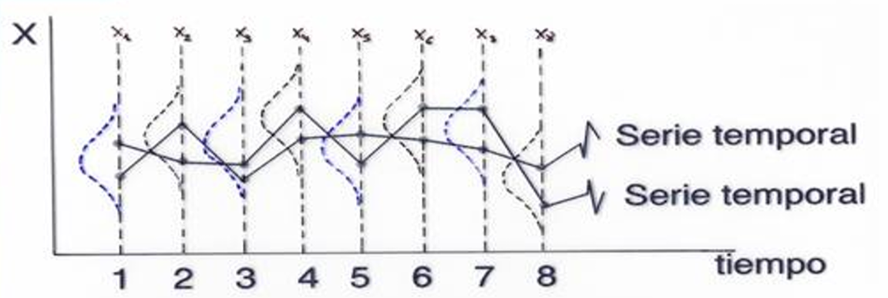
Por tanto, una manera más formal de definir una serie temporal es como una sucesión de observaciones de una variable tomadas en varios instantes de tiempo. Estas observaciones provienen de una distribución que puede ser diferente en cada instante del tiempo.
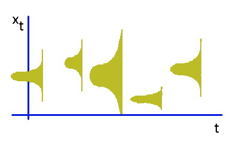
Dependiendo de los valores que toma la serie:
Tiempo continuo: cuando el valor de la variable puede cambiar en cualquier momento (ej: velocidad del viento).
Tiempo discreto: cuando el valor de la variable puede cambiar en una serie de momentos determinados del tiempo.
Valores continuos: cada variable puede tomar cualquier valor comprendido en un rango (ej: temperatura).
Valores discretos: cada variable sólo puede tomar determinados valores discretos. (ej: activos cuyos precios oscilan de céntimos de € en céntimos de €).
Ejemplo:
Consideremos un proceso estocástico que se conoce como “paseo aleatorio (ramdom walk)”, definido de la siguiente forma: \[x_t=\sum_{j=0}^t a_j,\] donde \(a_j \mathop {\sim}\limits^{iid} N(0, \sigma)\) se conoce como ruido blanco Gaussiano.
Ejercicio: Dibujad con R, tres trayectorias de tamaño 300 de un paseo aleatorio con \(\sigma^2= 1\). Agregad una leyenda al gráfico y las etiquetas de los ejes. Entregad el fichero y su compilación en Aula Digital.
Un proceso estocástico queda caracterizado por el conjunto de todas las distribuciones finito-dimensionales.
La distribución n-dimensional de un proceso: Es la función de distribución de un conjunto de \(n\) variables del proceso \((X_1,\ldots, X_n)\), es decir, \[F(x_1,\ldots, x_n) = P(x_1 \leq x_1,\ldots, X_n ≤ x_n), \; \; n \in N \]
No somos capaces de tratar cualquier tipo de serie temporal, ya que en cada instante tenemos una variable con distinta distribución de la que sólo observamos un dato.
Para un proceso de tamaño \(T\), habría que estimar \(T\)-medias, \(T\)-varianzas, y \(T(T-1)/2\)-autocovarianzas. No disponemos de información suficiente.
Necesitamos imponer condiciones a la serie
Un proceso estocástico \((Y_t)_{t\in Z}\) es:
Estable en media: si \(\mu_t=\mu=cte\)
Estable en varianza: si \(\sigma^2_t=\sigma^2_y=cte\)
`Estable en autocovarianza: si \(\gamma_{t_1,t_1+h}=\gamma_{t_2,t_2+h}=\gamma_h\) para cualquier par de instantes \(t_1,t_2 \in Z\) y cualquier \(h \in Z\).
Estacionario en sentido débil: si es estable en media y en autocovarianza.
Estacionario en sentido estricto: si las distribuciones marginales de todas las variables son idénticas y además la distribución finito-dimensional de cualquier conjunto de variables sólo depende de los retardos. Es decir, si \[F_{t_1,\ldots,t_k}(y_1,\ldots,y_k)=F_{t_1+h,\ldots,t_k+h}(y_1,\ldots,y_k)\] para cualquier \(k \in N\), \(t_1,\ldots,t_k\), \(h \in Z\), y \(y_1,\ldots,y_k \in R\), donde \(F_{t_1,\ldots,t_k}\) denota la distribución conjunta de \(Y_{t_1},\ldots, Y_{t_k}\).
7.5 Ejemplos para clasificar
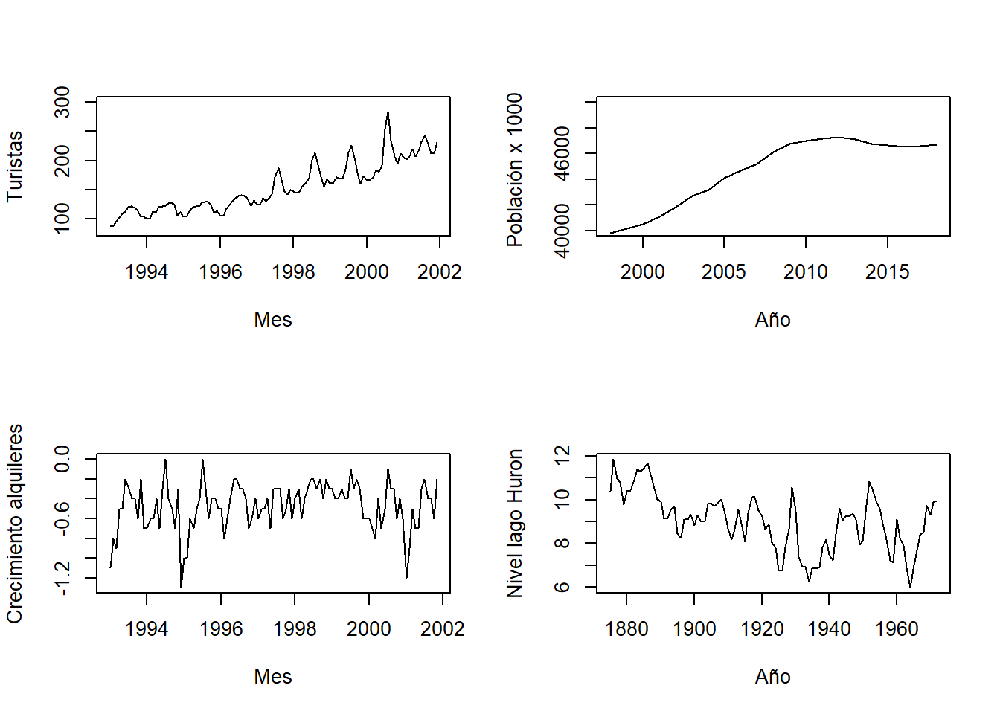
7.6 Descripción de series temporales
Una vez que has leído una serie de tiempo en R, el siguiente paso suele ser hacer un gráfico que muestre la evolución de la serie en el tiempo. Esto se puede hacer con la función plot.ts de R.
plot.ts(gastos.ts)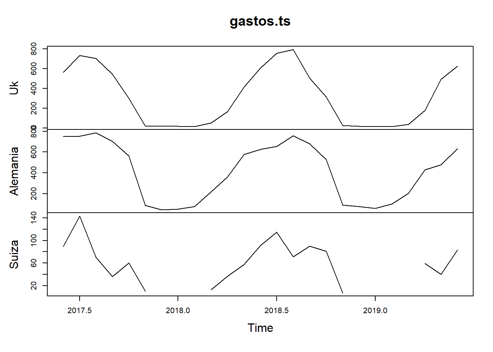
Pero, en el caso en que tenemos varias series tomadas en el mismo instante de tiempo, podemos utilizar las siguientes instrucciones para visualizar mejor.
plot(gastos.ts, plot.type="single",
col = 1:ncol(gastos.ts), ylim=c(0,1000),
xlab="Fecha",
ylab="Gasto mensual por persona en €")
legend("topright", colnames(gastos.ts), col=1:ncol(gastos.ts), lty=1, cex=.65)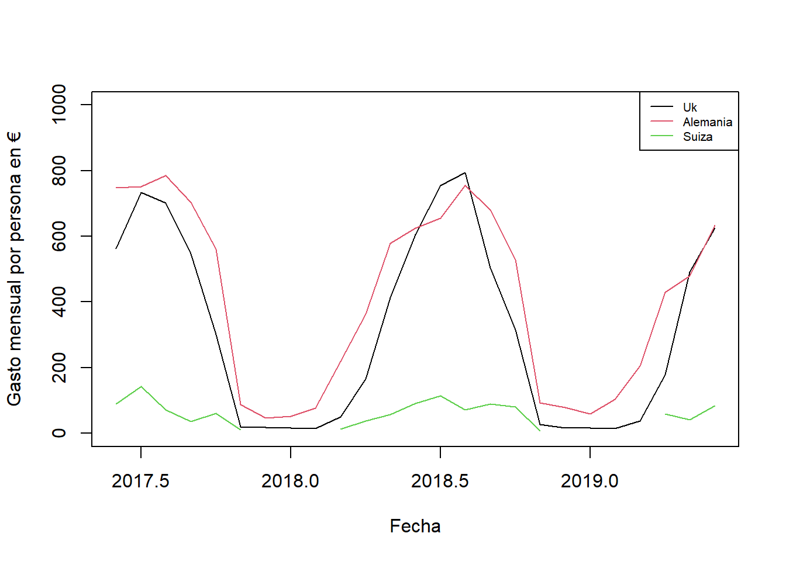
Si queremos ubicar dónde se producen los ciclos (movimientos de carácter periódico), podemos utilizar un gráfico de cajas y bigotes como el siguiente:
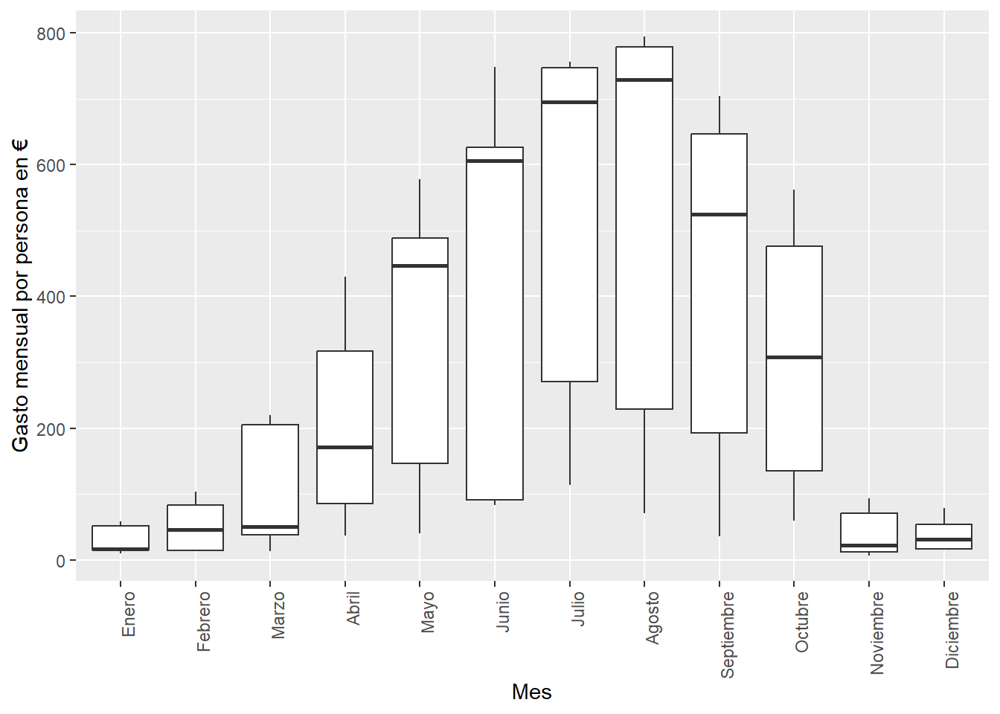
Otras ideas para visualizar series temporales:
Además de identificar los ciclos, cuando visualizamos una(s) serie(s) temporal(es) se suele prestar atención a las siguientes características:
- Tendencia: Se refiere a si la serie tiende a crecer o decrecer a largo plazo. Por ejemplo:
data(co2)
plot.ts(co2)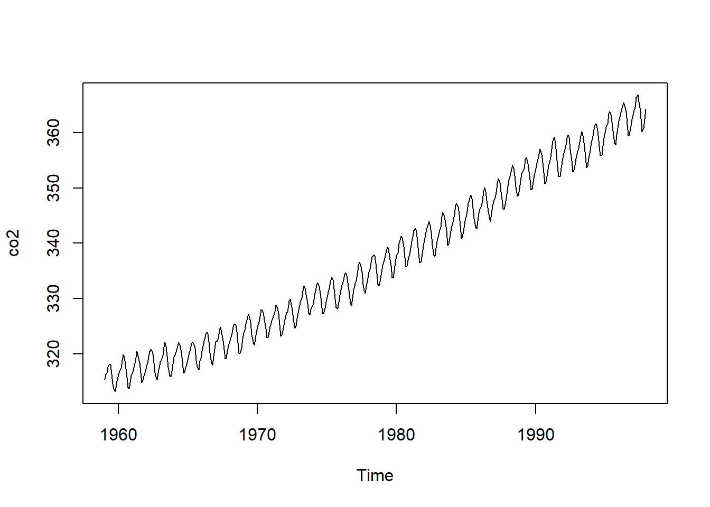
Cuando una serie permanece más o menos constante, oscilando en torno a un valor, decimos que la serie no tiene tendencia.
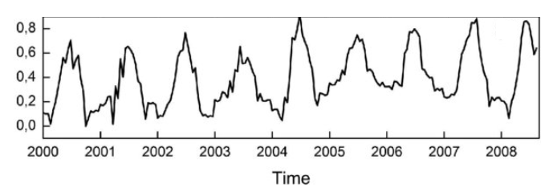
- Variabilildad: Decimos que una serie es Homocedástica, si su variabilidad se mantiene constante a lo largo de la serie. Cuando la variabilidad de la serie aumenta o disminuye a lo largo del tiempo, decimos que la serie es Heterocedástica. La siguiente figura muestra una serie heterocedástica en la que la varianza va aumentando con el tiempo.
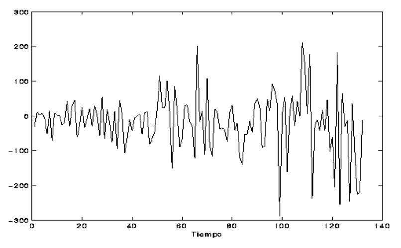
Una serie puede tener tendencia y ser heterocedástica
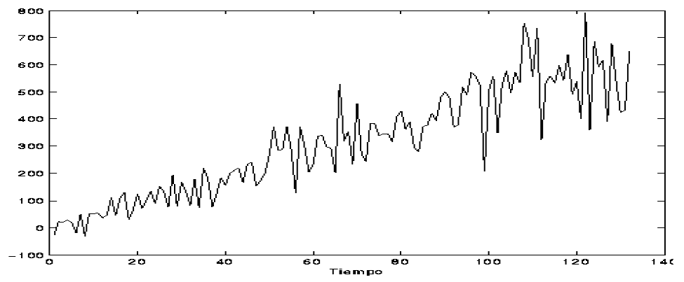
- Estacionalidad: Corresponde a aquellos comportamientos de tipo regular y repetitivo que se dan a lo largo de un período de tiempo, generalmente igual o inferior a un año, y que son producidos por factores tales como las variaciones climatológicas, las vacaciones, las fiestas, etc.
No confundas estacionalidad con fluctuación cíclica, que refleja los movimientos de carácter periódico, pero no necesariamente regulares, a medio plazo en torno a la tendencia.
Veamos si puedes identificar el tipo de comportamiento que presenta la siguiente serie
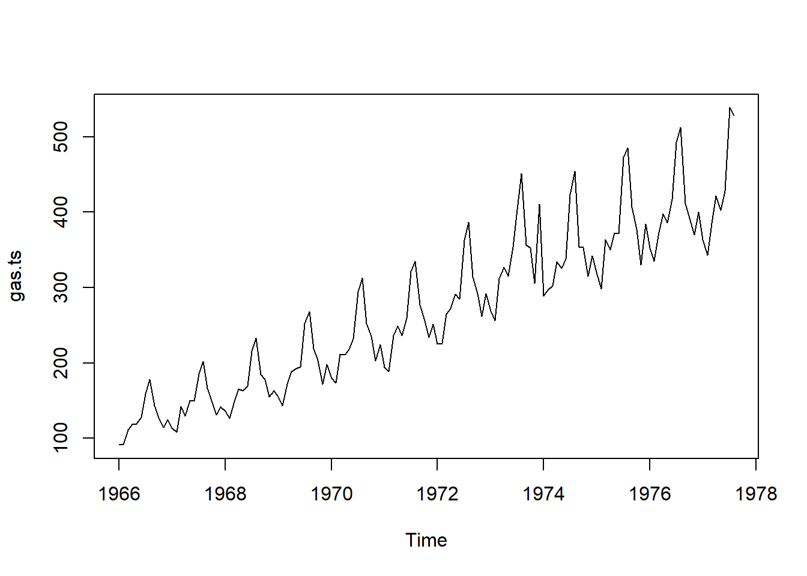
Hasta ahora hemos descrito el aspecto de la serie. Sin embargo, cuando se quiere analizar la serie es necesario identificar la estructura que la genera, es decir cómo influyen las observaciones del pasado en las observaciones del futuro.
7.6.1 Función de autocorrelación simple
La función de autocovarianza de un proceso estocástico \((Y_t)\) es una función de \(t\) que proporciona las covarianzas entre las variables del proceso en cada par de instantes: \[\gamma_{t_1,t_2}=Cov(Y_{t_1},Y_{t_2})=E[(Y_{t_1}-\mu_{t_1})(Y_{t_2}-\mu_{t_2})], \, \, t_1,t_2 \in I\]
La función de autocorrelación de un proceso estocástico \((Y_t)\) es una función de dos instantes de tiempo que describe las correlaciones entre las variables en un par de instantes $t_1,t_2 I: \[\rho_{t_1,t_2}=Cor(Y_{t_1},Y_{t_2})=\frac{\gamma_{t_1,t_2}}{\sigma_{t_1}\sigma_{t_2}}, \; \; t_1,t_2 \in I\]
La función de autocorrelación simple es una serie que proporciona la estructura de dependencia lineal de la misma.
Si los valores observados de la serie son: \(y_1,y_2,\ldots,y_{t-2},y_{t-1},y_{t}\). Entonces, \(y_{t+1}\) representa el valor de la serie para próximo periodo, es decir un valor futuro.
Luego, la función de autocorrelación proporciona el coeficiente de correlación entre las observaciones separadas un número determinado de periodos. Así la FAS (ACF en R), va a ser una sucesión de números:
\(\rho_1\) indica cómo influye una observación sobre la siguiente: \(y_i \rightarrow y_{i+1}\).
\(\rho_2\) indica cómo influye una observación sobre la que está dos periodos en adelante: \(y_i \rightarrow y_{i+2}\).
\(\rho_3\) indica cómo influye una observación sobre la que está tres periodos en adelante: \(y_i \rightarrow y_{i+3}\).
Y así sucesivamente
Los coeficientes de la FAS, \(\rho_1, \cdots, \rho_k,\cdots\) están acotados entre \([-1,1]\). Cuando un \(\rho_i\) vale cero, quiere decir que no existe efecto entre una observación y la \(i\) posiciones posteriores.
Si \(\rho_i\) es próximo a 1 indica que hay mucha relación entre una observación y la \(i\) posiciones posteriores, y que esa relación es positiva.
Si \(\rho_i\) es próximo a -1 indica que hay mucha relación entre una observación y la \(i\) posiciones posteriores, y que esa relación es negativa.
La FAS proporciona cómo una observación influye sobre las posteriores.
Ejemplo:
Serie del consumo mensual de gasolina en España 1/1966 - 8/1977
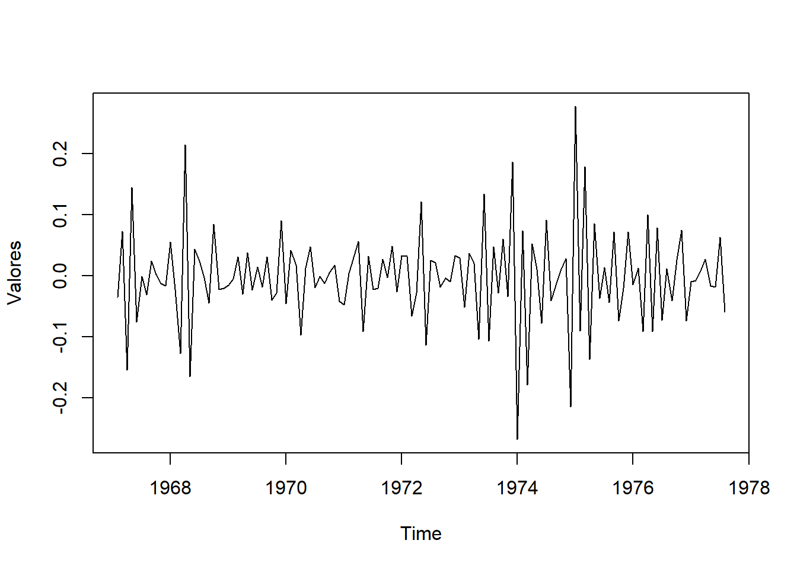
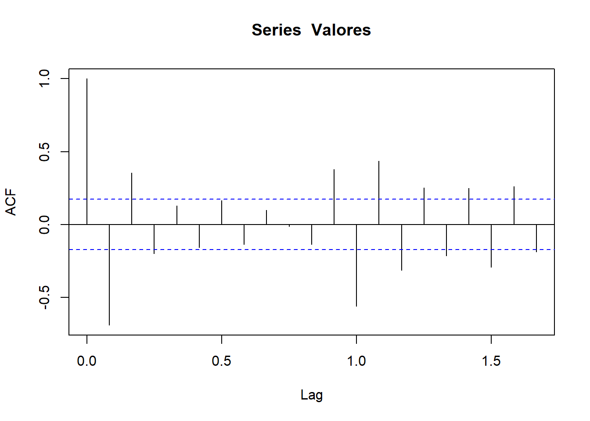
En el gráfico de la FAS anterior (ACF) se observa que los coeficientes (o barras) son significativos para retardos 1,2,3 y luego esto se repite para 11,12,13.
Las bandas horizontales que se observan proporcionan los límites para considerar significativo un retardo.
Pero, la FAS tiene un problema, y es que si por ejemplo \(\rho_1\) es distinto de cero, entonces: \[y_1 \rightarrow y_2 \rightarrow \cdots \rightarrow y_{t-1} \rightarrow y_{t} \rightarrow y_{t+1} \cdots \] es decir existe una cadena de influencia separada por un retardo. Pero si \(y_1 \rightarrow y_2\) y \(y_2 \rightarrow y_3\), entonces \(y_1 \rightarrow y_3\).
Por tanto, la ACF en general, si \(\rho_1\) es distinto de cero, encontrará que \(\rho_2, \rho_3, \cdots\) serán distintos de cero.
Pero, es necesario distinguir la cadena de influencia general, a través de \(\rho_1\) y las cadenas de influencia directa. Es decir cómo influye \(y_1\) sobre \(y_3\) directamente, es decir SIN PASAR A TRAVÉS DE \(y_2\).
7.6.2 Función de autocorrelación parcial
La Función de autocorrelación parcial, que en R es la función PACF proporciona la relación directa que existe entre observaciones separadas por \(k\) retardos.
Esta es una información muy valiosa sobre la estructura de la serie, ya que elimina el problema que presentaba la función de autocorrelación simple.
Ejemplo:
y=cumsum(rnorm(300,0,1))
plot.ts(y)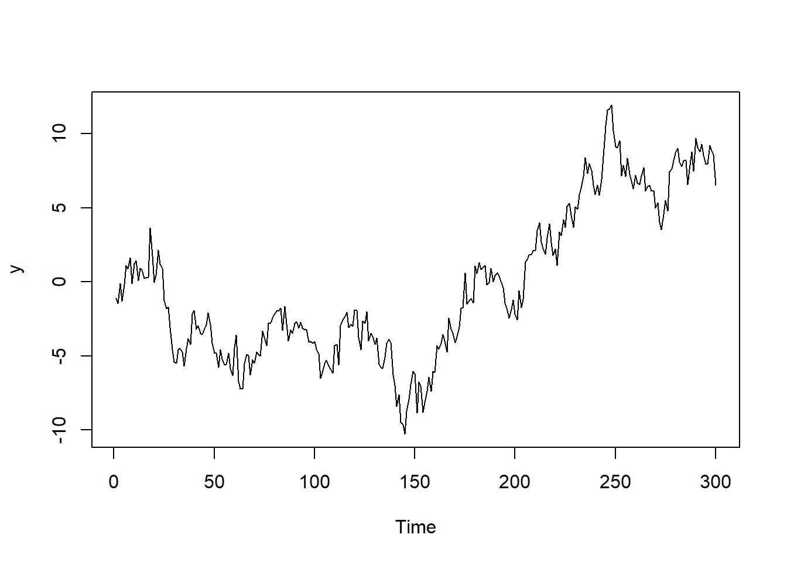
acf(y)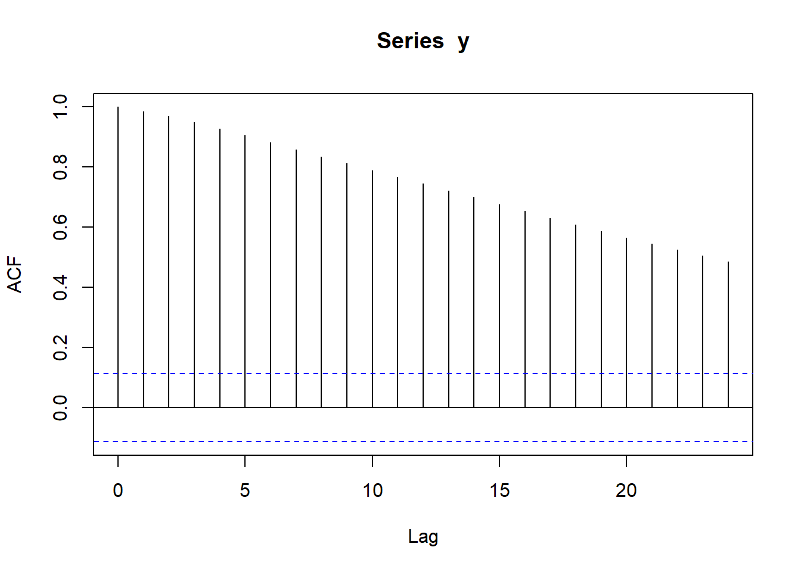
pacf(y)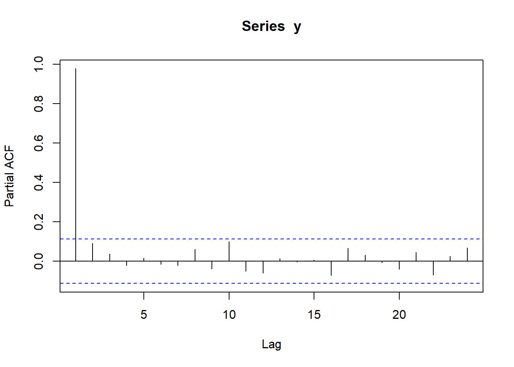
7.7 Serie estacionaria
En general, diremos que una serie es estacionaria cuando cumple las siguientes características:
No tiene tendencia
Es homocedástica.
No tiene ciclos estacionales
La estructura de dependencia se mantiene constante, es decir si una observación influye sobre la posterior, ésto ocurre SIEMPRE. Esta condición es importante para modelizar la serie, pues si el fenómeno que genera la serie cambia, es imposible que podamos prever la evolución de la serie.
La influencia de las observaciones sobre las posteriores decrece con el tiempo.
7.8 Transformaciones para conseguir estacionariedad
Cuando la serie no les estacionaria, es preciso transformarla.
Para eliminar la tendencia se toman una o varias diferencias en la serie. Una serie se diferencia restando a cada observación la observación anterior: \[w_t= y_t - y_{t-1}\]
Evidentemente la serie diferenciada \(w\) tiene una observación menos que la serie original, ya que la primera observación se pierde.
Si el gráfico de una serie muestra tendencia, se diferencia la serie y se comprueba si ha perdido la tendencia. En caso de que no la haya perdido se diferencia una segunda vez. Es muy raro necesitar más de una o dos diferencias para eliminar la tendencia de una serie.
Normalmente se utiliza la nomenclatura \(\Delta y_t= w_t\) para representar la serie con una diferencia.
Ejemplo:
gas.ts = ts(gas, start = c(1966,1), frequency = 12)
par(mfrow=c(1,2))
plot(gas.ts)
acf(gas.ts)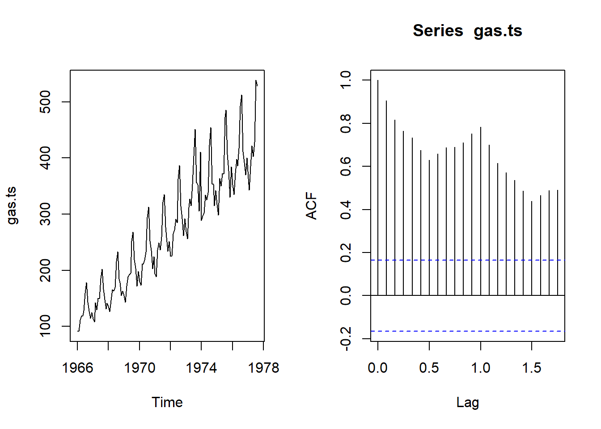
En la ACF se observa una pauta que aparece cuando la serie tiene tendencia y por tanto no es estacionaria: las barras disminuyen muy lentamente.
w = diff(x)
par(mfrow=c(1,2))
plot.ts(w)
acf(w)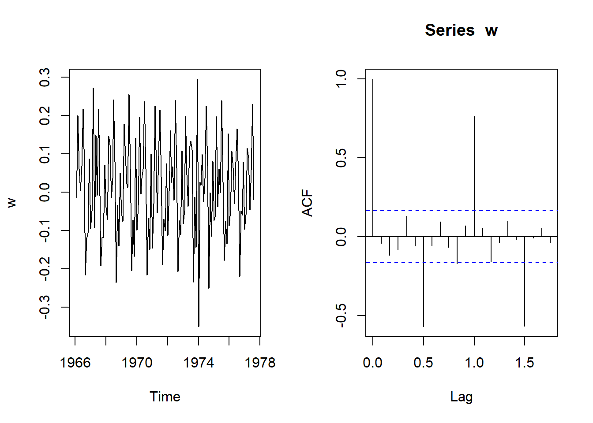
La serie ya no tiene tendencia, y su ACF decrece rápidamente.
Estabilización de la varianza:
Para estabilizar la variabilidad se suelen tomar logaritmos antes de aplicar diferencias en la serie
Posteriormente, cuando vayamos a hacer la predicción de la serie habrá que deshacer las diferencias y aplicando antilogaritmos según convenga.
Eliminar una tendencia no constante
Ejemplo: Si tenemos una serie mensual, podemos usar una media móvil de 12 meses: \[\hat{\mu_t}=\frac{z_{t-5}+ \cdots + z_{t+5}+ z_{t+6}}{12},\]
Aplicando este método se obtiene una estimación del nivel de la serie en los instantes \(t=6, \ldots, T-6\).
Para obtener los valores del nivel en los extremos se ajusta una recta a los últimos valores y de esta manera se completa la serie de niveles.
Una vez identificados los componentes determinísticos (tendencia y estacionalidad) y después de haberlos eliminado, persisten unos valores que son aleatorios.
Se pretende estudiar qué tipo de comportamiento aleatorio presentan estos residuos, utilizando algún tipo de modelo probabilístico que los describa.
7.9 Descomposición de una serie con R
Los métodos de descomposición tratan de separar la serie en subseries correspondientes a la tendencia, la estacionalidad y el ruido (componente aleatorio).
El primer paso a seguir a la hora de descomponer una serie es determinar cómo se combinan sus componentes.
Caso aditivo:
\[y_t= \mu_t + S_t + a_t\]
Caso multiplicativo:
El efecto estacional tiende a aumentar al aumentar la tendencia. \[y_t= \mu_t \times S_t \times a_t\]
7.10 Conductas de series temporales
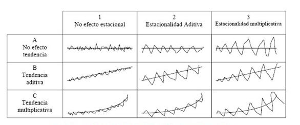
El procedimiento de construcción del modelo se realiza en tres etapas:
- Se estima el nivel de la serie observada con el modelo de tendencias deterministas que se fundamenta en modelar la dependencia temporal mediante las ideas de regresión.
Modelo:
Suponemos que la serie se puede descomponer de la siguiente forma: \[ y_t=\mu_t+a_t, \;\;\; t=1,\ldots,n\]
\(\mu_t=f(t,\mathbf{\beta})\) es el nivel de la serie depende del tiempo y de un vector de parámetros, \(\mathbf{\beta}\) que se estiman a partir de los datos.
\(a_t\), se denomina error aleatorio (o innovación) en el instante \(t\): recoge todos los demás efectos que actuan sobre la serie. Se supone que tiene una estructura estable a lo largo del tiempo: \(a_t \mathop {\sim}\limits^{iid} N(0, \sigma)\).
Habitualmente \(\mathbf{\beta}\) se obtiene utilizando el método de mínios cuadrados; es decir, resolviendo el problema: \[\min_{\mathbf{\beta}}\sum_{t=0}^n [y_t-f(t,\mathbf{\beta})]^2\]
Derivando la función \(f(t,\mathbf{\beta})=\sum_{t=0}^n [y_t-f(t,\mathbf{\beta})]^2\) respecto de los elementos de \(\mathbf{\beta}\) e igualando a cero, se obtienen las ecuaciones normales. El estimador mínimo cuadrático \(\hat{\mathbf{\beta}}\) es la solución a dichas ecuaciones.
La tendencia estimada es \(\hat{\mu_t}=f(t,\hat{\mathbf{\beta}})\), donde \(\hat{\mathbf{\beta}}\) es un estimador de \(\mathbf{\beta}\)
- A continuación se resta a la serie el nivel estimado para obtener una serie residual, que se denomina serie sin tendencia: \[E_t=y_t - \hat{\mu}_t=S_t + a_t\]
Una forma sencilla de estimar el efecto de las \(l\) distintas estaciones es:
Calcular la media de la serie sin tendencia: \(\bar{e}=n^{-1}\sum_{t=1}^{n}e_t\).
Calcular las medias de cada estación: \(\bar{e}_j=m^{-1}\sum_{k=1}^{m}e_{(k-1)l+j}, \;\; j=1,\ldots,l\).
Las componentes estacionales se estiman mediante: \[\widehat{s}_j=\overline{e}_j - \overline{e} \;\; j=1,\ldots,l\] y verifican que \(\sum_{j=1}^{l}\widehat{s}_j=0\)
Se obtiene la serie de residuos restando la serie sin tendencia el factor estacional de cada observación: \[ \hat{a}_t=E_t- \hat{S}_j\].
La predicción de la serie se realiza sumando las estimaciones de la tendencia y el factor estacional que corresponde a cada observación.
Si la variabilidad de los datos parece crecer con su nivel, podemos suponer un `Caso multiplicativo:.
Tomando logaritmos y renombrando las componentes se obtiene un modelo aditivo.
Ejemplo de descomposición de una serie:
datos=read.table("datos/precio_vestido.txt",header=TRUE)
# Ajustamos una tendencia lineal
x=1:length(datos$vestido)
tendencia=lm(datos$vestido ~ x)
# Restamos esta recta a la serie
e=datos$vestido-tendencia$fitted.values
e_ts=ts(e,start = c(1993,1),frequency = 12)
precio_vestido=ts(datos$vestido,start = c(1993,1),frequency = 12)par(mfrow=c(1,2))
ts.plot(precio_vestido,xlab="Tiempo",ylab="Precios vestidos")
ts.plot(e_ts,xlab="Tiempo",ylab="Serie sin tendencia")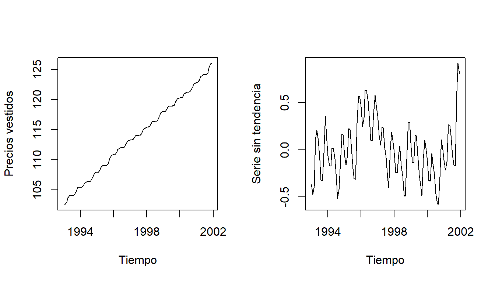
El comando cycle determina la unidad de tiempo a la que pertenece cada observación de la serie.
cycle(e_ts) Jan Feb Mar Apr May Jun Jul Aug Sep Oct Nov Dec
1993 1 2 3 4 5 6 7 8 9 10 11 12
1994 1 2 3 4 5 6 7 8 9 10 11 12
1995 1 2 3 4 5 6 7 8 9 10 11 12
1996 1 2 3 4 5 6 7 8 9 10 11 12
1997 1 2 3 4 5 6 7 8 9 10 11 12
1998 1 2 3 4 5 6 7 8 9 10 11 12
1999 1 2 3 4 5 6 7 8 9 10 11 12
2000 1 2 3 4 5 6 7 8 9 10 11 12
2001 1 2 3 4 5 6 7 8 9 10 11 12e_barra=mean(e_ts) #media de la serie sin tendencia
s=rep(0,12) #vector para los coeficientes estacionales
for(j in 1:12)
{
indice_j=seq(j,108,by=12)
s[j]=mean(e_ts[indice_j])-e_barra
}
#Calculamos los residuos
s_compl=rep(s,9)
a=e_ts-s_complplot.ts(a,xlab="Tiempo",ylab="Residuos")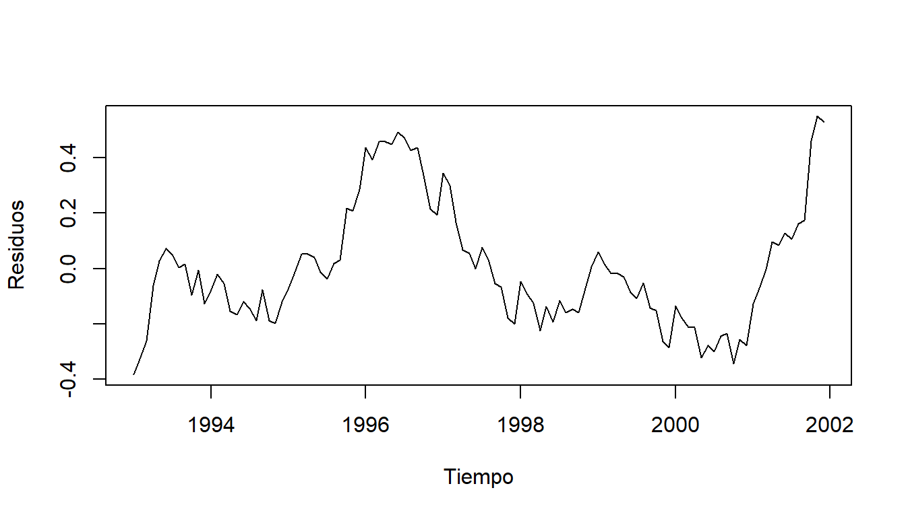
serie=ts(datos$vestido,start=c(1993,1),frequency = 12)
plot(decompose(serie))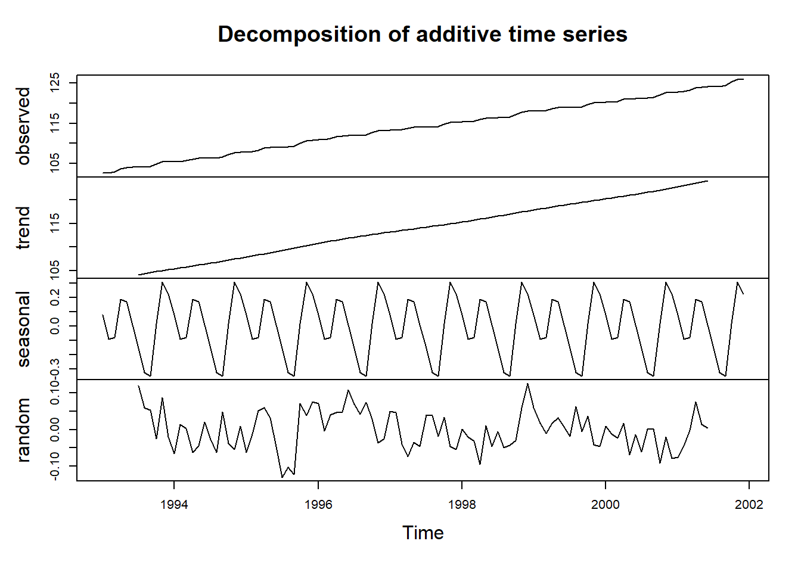
Los valores estimados de los componentes estacionales, de tendencia e irregulares ahora se almacenan en variables: descompose(serie)$trend, descompose(serie)$seasonal y descompose(serie)$random.
Por ejemplo, podemos imprimir los valores estimados del componente estacional escribiendo:
decompose(serie)$seasonal Jan Feb Mar Apr May
1993 0.078689236 -0.092664931 -0.077039931 0.186501736 0.172960069
1994 0.078689236 -0.092664931 -0.077039931 0.186501736 0.172960069
1995 0.078689236 -0.092664931 -0.077039931 0.186501736 0.172960069
1996 0.078689236 -0.092664931 -0.077039931 0.186501736 0.172960069
1997 0.078689236 -0.092664931 -0.077039931 0.186501736 0.172960069
1998 0.078689236 -0.092664931 -0.077039931 0.186501736 0.172960069
1999 0.078689236 -0.092664931 -0.077039931 0.186501736 0.172960069
2000 0.078689236 -0.092664931 -0.077039931 0.186501736 0.172960069
2001 0.078689236 -0.092664931 -0.077039931 0.186501736 0.172960069
Jun Jul Aug Sep Oct
1993 0.008897569 -0.152560764 -0.325477431 -0.348394097 0.016710069
1994 0.008897569 -0.152560764 -0.325477431 -0.348394097 0.016710069
1995 0.008897569 -0.152560764 -0.325477431 -0.348394097 0.016710069
1996 0.008897569 -0.152560764 -0.325477431 -0.348394097 0.016710069
1997 0.008897569 -0.152560764 -0.325477431 -0.348394097 0.016710069
1998 0.008897569 -0.152560764 -0.325477431 -0.348394097 0.016710069
1999 0.008897569 -0.152560764 -0.325477431 -0.348394097 0.016710069
2000 0.008897569 -0.152560764 -0.325477431 -0.348394097 0.016710069
2001 0.008897569 -0.152560764 -0.325477431 -0.348394097 0.016710069
Nov Dec
1993 0.307855903 0.224522569
1994 0.307855903 0.224522569
1995 0.307855903 0.224522569
1996 0.307855903 0.224522569
1997 0.307855903 0.224522569
1998 0.307855903 0.224522569
1999 0.307855903 0.224522569
2000 0.307855903 0.224522569
2001 0.307855903 0.2245225697.11 Métodos armónicos
Un procedimiento alternativo para modelar la estacionalidad es representar la serie por una función armónica de su periodo \(l\).
Suponiendo que hemos eliminado la tendencia, si la huviese, consideremos series que tienen sólo componente estacional con cliclo único:red`, es decir: \[y_t=S_t+a_t\]
La estacionalidad se puede capturar con una función seno o coseno, de la siguiente forma:
\[S_t=A \sin((2\pi/l)t+\theta),\] donde:
\(l\) es el periodo: número de observaciones hasta que la serie se repite.
\(A\) es la amplitud de la oscilación.
\(\theta\) es el ángulo de desfase con relación al comienzo del ciclo.
\(f=1/l\) se denomina frecuencia de la serie. Es la fracción de ciclo completado entre dos observaciones de la serie. Si \(l<1\), entonces \(f>1\) es el número de ciclos que pasan entre dos observaciones.
Ejemplo:
Una serie trimestral (\(l=4\)), la frecuencia es \(f=\frac{1}{4}=0.25\), indicando que entre dos observaciones, un trimestre, ha transcurrido 0.25 del periodo de la función o un 25% de un ciclo completo.
- \(w=2 \pi /l=2 \pi f\) es la frecuencia angular, o ángulo (en radianes) recorrido entre dos observaciones de la serie. Para \(l=365 \implies w=0.0172\).
Para capturar series de múltiples ciclos, usaremos la representación de Fourier: toda función periódica puede representarse como suma de funciones sinusoidales de distinta amplitud y frecuencia.
Dada una serie de longitud \(n\), se denomina periodos básicos o de Fourier a los que son fracciones exactas completas del tamaño muestral. Es decir, \[s_j=\frac{n}{j}, \; \; para \; \; j=1,2,\ldots n/2\]
Podemos obtener una representación general de una función periódica como suma de ondas asociadas a todas las frecuencias básicas, mediante: \[y_t=\mu+\displaystyle\sum_{j=1}^{n/2} A_j sen(w_j t) + \displaystyle\sum_{j=1}^{n/2} B_j cos(w_j t)\]
Para la ecuación anterior se usan los siguientes estimadores:
\(\hat{\mu}=\frac{1}{n} \displaystyle\sum_{t=1}^{T} y_t\)
\(\hat{A}= \frac{2}{n} \displaystyle\sum_{t=1}^{n} sen(w_jt) y_t\)
\(\hat{B}= \frac{2}{n} \displaystyle\sum_{t=1}^{n} cos(w_jt) y_t\)
Un boxplot nos podría ayudar a ver cómo se comporta la serie por ciclos.
7.12 En resumen
Finalizamos la discusión sobre el análisis descriptivo de una serie temporal. En general, deberíamos revisar:
El gráfico de la serie.
Tendencia: si la hubiera, estimarla (modelo de tendencia deteminista, suavizado o tendencia evolutiva).
Estacionalidad: revisar el boxplot de la serie en función del ciclo y estimarla con los coeficientes estacionales (tal como lo hace R) o con funciones armónicas.
La predicción de la serie se realiza sumando las estimaciones de la tendencia y el factor estacional que corresponde a cada observación.
En el caso de que estemos trabajando con el caso aditivo: \(y_t=\mu_t + S_t +a_t\).
En caso que el efecto estacional tienda a aumentar con la tendencia, usamos el caso multiplicativo: \(z_t=\mu_t \times S_t \times a_t\)